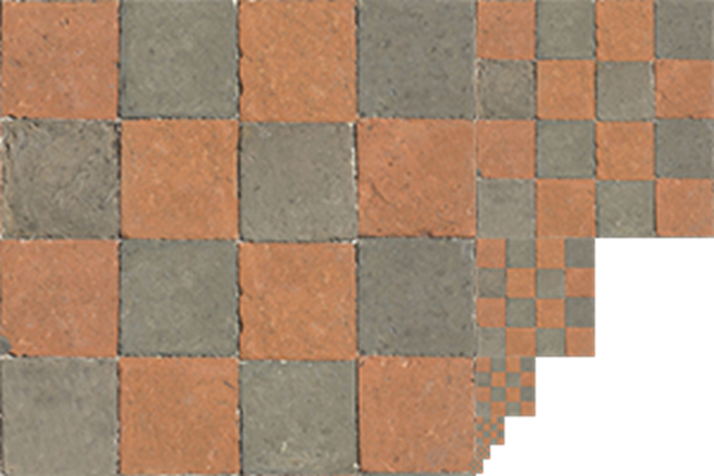
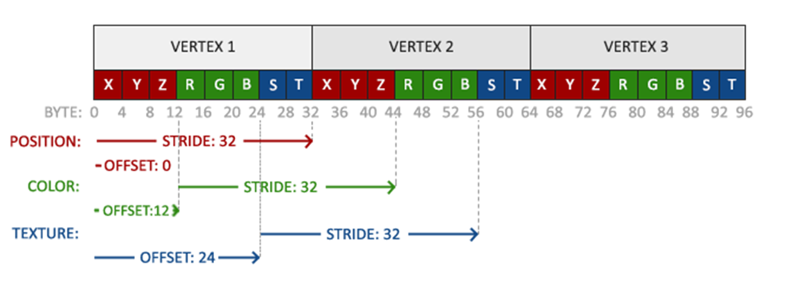
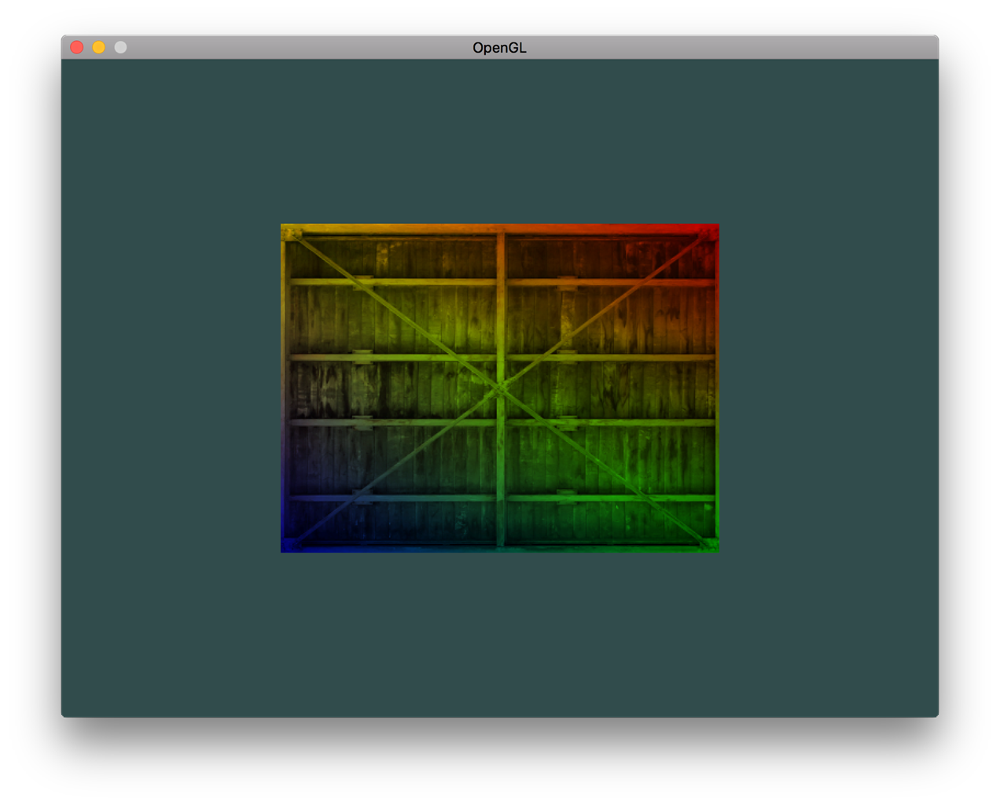
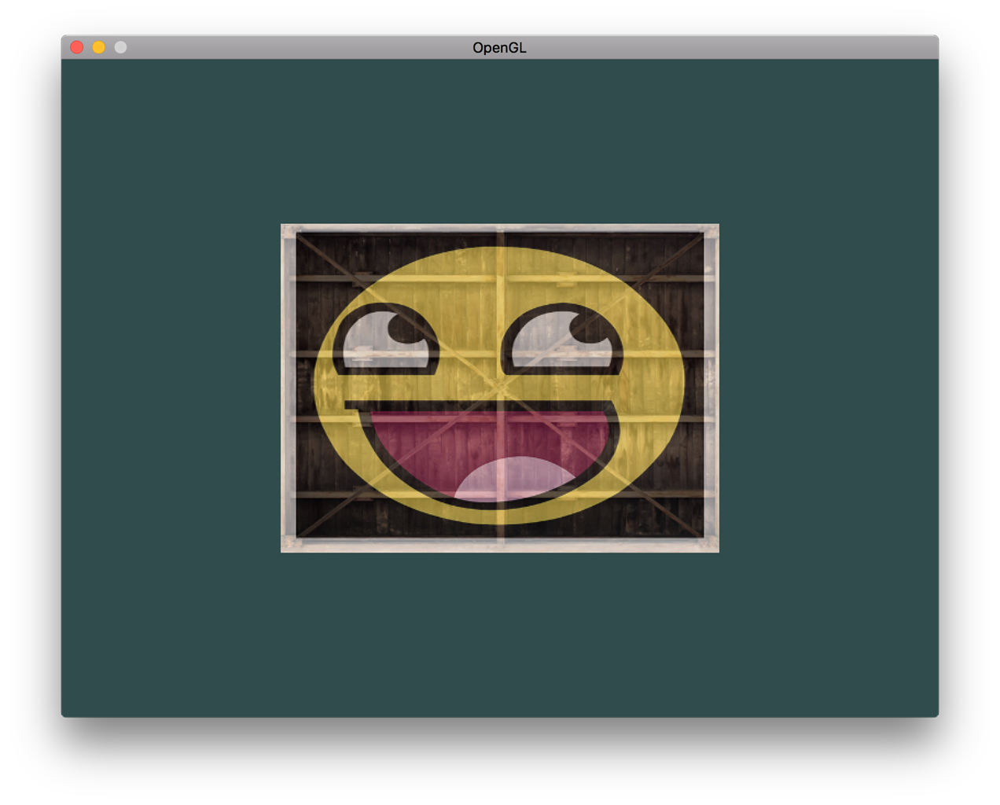

OpenGL Textures
Computer Graphics - Textures
Gustavo Reis
Working with Textures
Texture Objects and Parameters
- Just like VBOs and VAOs, textures are objects that need to be generated first
- It shouldn’t be a surprise what this function is called:
Textures are typically used for images to decorate 3D models, but in reality they can be used to store many different kinds of data.
Texture Dimensionality
- It’s possible to have 1D, 2D and even 3D textures
- Can be used to store bulk data on the GPU
- Example use case: storing terrain information
- In this class, we focus on textures for images
- But the principles generally apply to all kinds of textures
Binding Textures
- Just like other objects, textures have to be bound to apply operations
- Since images are 2D arrays of pixels, bind to
GL_TEXTURE_2Dtarget - Pixels are addressed using texture coordinates during drawing
Texture Coordinates
- Coordinates range from
0.0to1.0 (0,0)is conventionally the bottom-left corner(1,1)is the top-right corner- The operation using these coordinates to retrieve color information is called sampling
- Different approaches for different scenarios
- OpenGL offers many options to control sampling
Texture Coordinate Example

Texture Wrapping
Handling Out-of-Range Coordinates
Important
What happens when a coordinate outside the range of 0 to 1 is given?
OpenGL offers 4 ways of handling this:
GL_REPEAT: Integer part ignored, repeating pattern formsGL_MIRRORED_REPEAT: Repeated but mirrored when integer part is oddGL_CLAMP_TO_EDGE: Coordinate clamped between 0 and 1GL_CLAMP_TO_BORDER: Outside coordinates get specified border color
Wrapping Modes Visualization

Setting Wrapping Parameters
- Clamping can be set per coordinate
- Texture coordinates equivalent to
(x,y,z)are called(s,t,r) - Changed with
glTexParameter*functions
glTexParameteri(GL_TEXTURE_2D, GL_TEXTURE_WRAP_S, GL_REPEAT);
glTexParameteri(GL_TEXTURE_2D, GL_TEXTURE_WRAP_T, GL_REPEAT);The i indicates the type of the value you want to specify.
Border Color
If using GL_CLAMP_TO_BORDER, you can change the border color:
float color[] = { 1.0f, 0.0f, 0.0f, 1.0f };
glTexParameterfv(GL_TEXTURE_2D, GL_TEXTURE_BORDER_COLOR, color);This sets the border color to red.
Texture Filtering
The Resolution Problem
- Texture coordinates are resolution independent
- Won’t always match a pixel exactly
- Happens when texture is stretched or sized down
- OpenGL offers various methods to decide on sampled color
Filtering Methods
This process is called filtering. Available methods:
GL_NEAREST: Returns closest pixel to coordinatesGL_LINEAR: Returns weighted average of 4 surrounding pixels- Mipmap options:
GL_NEAREST_MIPMAP_NEAREST,GL_LINEAR_MIPMAP_NEAREST,GL_NEAREST_MIPMAP_LINEAR,GL_LINEAR_MIPMAP_LINEAR
Filtering Comparison

Choosing the Right Filter
- Linear interpolation gives smoother results
- But isn’t always ideal
- Nearest neighbor better for 8-bit pixel art aesthetic
- Can specify different filters for scaling down vs scaling up
glTexParameteri(GL_TEXTURE_2D, GL_TEXTURE_MIN_FILTER, GL_LINEAR);
glTexParameteri(GL_TEXTURE_2D, GL_TEXTURE_MAG_FILTER, GL_LINEAR);GL_TEXTURE_MIN_FILTER: Scaling down (minification)GL_TEXTURE_MAG_FILTER: Scaling up (magnification)
Mipmaps
The Performance Problem
- Imagine a room with thousands of textured objects
- Far objects have same high resolution as close objects
- OpenGL has difficulty retrieving correct color from high-res textures for distant small fragments
- Fragment may span large part of texture
- Results in visible artifacts on small objects
- Wastes memory using high-res textures on small objects
Mipmap Solution
- Mipmaps: Collection of texture images
- Each subsequent texture is twice as small as previous
- After certain distance, OpenGL uses appropriate mipmap
- Smaller resolution not noticeable to user
- Good for performance as well
Mipmap Visualization
Generating Mipmaps
- Mipmaps are smaller pre-filtered copies of your texture
- Recommended to use them - higher quality and performance
- Generating is simple - just call the function!
- Must load texture image first before generating mipmaps
Mipmap Filtering Between Levels
Tip
When switching between mipmaps, you can filter between levels using NEAREST and LINEAR!
- Without filtering, may see sharp edges between mipmap layers
- Can apply filtering when transitioning between mipmap levels
- Similar to normal texture filtering
Mipmap Filtering Options
Four options for filtering between mipmap levels:
GL_NEAREST_MIPMAP_NEAREST: Uses closest mipmap, nearest neighbor interpolationGL_LINEAR_MIPMAP_NEAREST: Closest mipmap with linear interpolationGL_NEAREST_MIPMAP_LINEAR: Two closest mipmaps, nearest neighbor interpolationGL_LINEAR_MIPMAP_LINEAR: Two closest mipmaps with linear interpolation (trilinear filtering)
Setting Mipmap Filters
glTexParameteri(GL_TEXTURE_2D, GL_TEXTURE_MIN_FILTER,
GL_LINEAR_MIPMAP_LINEAR);
glTexParameteri(GL_TEXTURE_2D, GL_TEXTURE_MAG_FILTER, GL_LINEAR);Warning
Common mistake: Setting mipmap filtering for magnification!
Mipmaps are only for downscaling. Using mipmap filtering for GL_TEXTURE_MAG_FILTER generates GL_INVALID_ENUM error.
Why No Mipmaps for Magnification?
- Mipmaps are smaller versions of the original texture
- Used when texture needs to be shrunk down
- Magnification means texture is being enlarged
- Can’t use smaller textures to make something bigger!
- Texture magnification doesn’t use mipmaps - only minification does
Loading and Creating Textures
The Image Loading Challenge
- Texture images stored in dozens of file formats
- Each with different structure and data ordering
- How do we get images into our application?
One solution: Choose a format (e.g., PNG) and write your own loader to convert to byte array.
Better solution: Use an image-loading library like stb_image.h!
stb_image.h
About stb_image
- Very popular single header image loading library
- Created by Sean Barrett
- Loads most popular file formats
- Easy to integrate into projects
Installation
- Download from GitHub
- Add to project as
stb_image.h - Create a C++ file with:
Why? Defining STB_IMAGE_IMPLEMENTATION makes the preprocessor turn the header into a .cpp file with the implementation.
Using stb_image
int width, height, nrChannels;
unsigned char* data = stbi_load("container.jpg", &width, &height,
&nrChannels, 0);Function parameters:
- First: Image file location
- Second, third, fourth: Pointers to store width, height, and color channels
- Last: Desired number of channels (0 = use image’s channels)
We need width and height for generating textures.
Generating a Texture
Creating Texture Objects
glGenTextures: How many textures to generate- Stores texture IDs in unsigned int array
- Bind texture for subsequent operations:
Loading Texture Data
glTexImage2D Parameters (1/2)
- First: Texture target (
GL_TEXTURE_2D) - Second: Mipmap level (0 = base level)
- Third: Internal format for storage (
GL_RGB) - Fourth/Fifth: Width and height
glTexImage2D Parameters (2/2)
- Sixth: Always 0 (legacy parameter)
- Seventh: Format of source image (
GL_RGB) - Eighth: Datatype of source image (
GL_UNSIGNED_BYTE) - Ninth: Actual image data
After Loading
- Texture image now attached to bound texture object
- Only base-level loaded initially
- Can manually specify each mipmap level OR…
- Call
glGenerateMipmapto auto-generate all mipmaps
Good practice: Free image memory after generating texture!
Complete Texture Setup
GLuint texture;
glGenTextures(1, &texture);
glBindTexture(GL_TEXTURE_2D, texture);
// Set texture parameters
glTexParameteri(GL_TEXTURE_2D, GL_TEXTURE_WRAP_S, GL_REPEAT);
glTexParameteri(GL_TEXTURE_2D, GL_TEXTURE_WRAP_T, GL_REPEAT);
glTexParameteri(GL_TEXTURE_2D, GL_TEXTURE_MIN_FILTER, GL_LINEAR);
glTexParameteri(GL_TEXTURE_2D, GL_TEXTURE_MAG_FILTER, GL_LINEAR);
// Load and generate texture
int width, height, nrChannels;
unsigned char* data = stbi_load("container.jpg", &width, &height,
&nrChannels, 0);
if (data) {
glTexImage2D(GL_TEXTURE_2D, 0, GL_RGB, width, height, 0, GL_RGB,
GL_UNSIGNED_BYTE, data);
glGenerateMipmap(GL_TEXTURE_2D);
} else {
std::cout << "Failed to load texture" << std::endl;
}
stbi_image_free(data);Applying Textures
Rectangle Shape Setup
- We’ll use the rectangle from the previous “Hello Triangle” lesson
- Need to update vertex data with texture coordinates
- Each vertex gets position, color, AND texture coordinates
Updated Vertex Data
float vertices[] = {
// positions // colors // texture coords
0.5f, 0.5f, 0.0f, 1.0f, 0.0f, 0.0f, 1.0f, 1.0f, // top right
0.5f, -0.5f, 0.0f, 0.0f, 1.0f, 0.0f, 1.0f, 0.0f, // bottom right
-0.5f, -0.5f, 0.0f, 0.0f, 0.0f, 1.0f, 0.0f, 0.0f, // bottom left
-0.5f, 0.5f, 0.0f, 1.0f, 1.0f, 0.0f, 0.0f, 1.0f // top left
};Now each vertex has 8 floats: 3 for position, 3 for color, 2 for texture coordinates.
Vertex Attribute Configuration
GLint texCoordAttrib = glGetAttribLocation(shaderProgram, "texCoord");
glEnableVertexAttribArray(texCoordAttrib);
glVertexAttribPointer(texCoordAttrib, 2, GL_FLOAT, GL_FALSE,
8 * sizeof(float), (void*)(6 * sizeof(float)));Warning
Update stride to 8 * sizeof(float) for ALL vertex attributes!
Vertex Shader Update
#version 330 core
in vec3 position;
in vec3 color;
in vec2 texCoord;
out vec3 Color;
out vec2 TexCoord;
void main()
{
Color = color;
TexCoord = texCoord;
gl_Position = vec4(position, 1.0);
}Accepts texture coordinates as input and forwards them to fragment shader.
Fragment Shader with Sampler
- Fragment shader needs access to texture object
- GLSL has built-in type:
sampler2Dfor 2D textures - Add as uniform variable
The texture() Function
texture()samples color from texture- First parameter: Texture sampler (
sampler2D) - Second parameter: Texture coordinates
- Samples using texture parameters set earlier
- Returns (filtered) color at (interpolated) coordinates
Drawing with Texture
glBindTexture(GL_TEXTURE_2D, texture);
glBindVertexArray(VAO);
glDrawElements(GL_TRIANGLES, 6, GL_UNSIGNED_INT, 0);Simply bind the texture before drawing - it automatically assigns to fragment shader’s sampler!
Textured Rectangle Result

Mixing Texture with Vertex Colors
Get creative - multiply texture color with vertex colors:
Mixed Color Result
Texture Units
The Uniform Mystery
Important
Why didn’t we need glUniform for the sampler?
- Can actually assign location with
glUniform1i - Allows multiple textures in one shader
- Location is called a texture unit
- Default texture unit is 0 - why it worked before
- Not all drivers assign default - might not render!
Purpose of Texture Units
- Allow more than 1 texture in shaders
- Assign texture units to samplers
- Bind multiple textures simultaneously
- Must activate unit first with
glActiveTexture
Texture Unit Details
- After activating, next
glBindTexturebinds to that unit GL_TEXTURE0is always active by default- That’s why previous examples worked without activation
Fragment Shader with Two Textures
Understanding mix()
mix()linearly interpolates between two values- Third parameter controls blend:
0.0→ 100% first input1.0→ 100% second input
0.5→ 50% first + 50% second0.2→ 80% first + 20% second
Result: Smooth blending of both texture colors!
Loading Second Texture
Create and load another texture following same process:
// Load and create second texture
GLuint texture2;
glGenTextures(1, &texture2);
glBindTexture(GL_TEXTURE_2D, texture2);
// ... set parameters ...
unsigned char* data2 = stbi_load("awesomeface.png", &width, &height,
&nrChannels, 0);
if (data2) {
glTexImage2D(GL_TEXTURE_2D, 0, GL_RGB, width, height, 0, GL_RGB,
GL_UNSIGNED_BYTE, data2);
glGenerateMipmap(GL_TEXTURE_2D);
}
stbi_image_free(data2);Binding Multiple Textures
glActiveTexture(GL_TEXTURE0);
glBindTexture(GL_TEXTURE_2D, texture1);
glActiveTexture(GL_TEXTURE1);
glBindTexture(GL_TEXTURE_2D, texture2);
glBindVertexArray(VAO);
glDrawElements(GL_TRIANGLES, 6, GL_UNSIGNED_INT, 0);Order matters: Activate unit, then bind texture to that unit!
Setting Sampler Uniforms
Tell OpenGL which unit each sampler uses (set once, before render loop):
glUseProgram(shaderProgram);
GLuint textureLocation = glGetUniformLocation(shaderProgram, "ourTexture");
GLuint textureLocation2 = glGetUniformLocation(shaderProgram, "ourTexture2");
glUniform1i(textureLocation, 0); // Texture unit 0
glUniform1i(textureLocation2, 1); // Texture unit 1
while(...) {
// Render loop
}Flipped Texture Problem

Warning
Texture appears upside-down!
Why Textures Flip
- OpenGL expects
0.0on y-axis at bottom of image - Most images have
0.0at top of y-axis - Coordinate system mismatch!
Solution: Tell stb_image.h to flip during loading:
Add this before loading any images.
Corrected Result
Complete SDL3 Example with Modern C++
Full Application Structure
#include <iostream>
#include <memory>
#include <array>
#include <SDL3/SDL.h>
#include <glad/glad.h>
#define STB_IMAGE_IMPLEMENTATION
#include "stb_image.h"
class TextureApp {
private:
struct SDLDestroyer {
void operator()(SDL_Window* w) const { SDL_DestroyWindow(w); }
void operator()(SDL_GLContext c) const { SDL_GL_DestroyContext(c); }
};
std::unique_ptr<SDL_Window, SDLDestroyer> window{nullptr};
std::unique_ptr<void, SDLDestroyer> context{nullptr};
GLuint shaderProgram{0};
GLuint VAO{0}, VBO{0}, EBO{0};
GLuint texture1{0}, texture2{0};Shader Source Code
const char* vertexShaderSource = R"glsl(
#version 330 core
layout (location = 0) in vec3 position;
layout (location = 1) in vec3 color;
layout (location = 2) in vec2 texCoord;
out vec3 Color;
out vec2 TexCoord;
void main() {
Color = color;
TexCoord = texCoord;
gl_Position = vec4(position, 1.0);
}
)glsl";
const char* fragmentShaderSource = R"glsl(
#version 330 core
in vec3 Color;
in vec2 TexCoord;
out vec4 outColor;
uniform sampler2D ourTexture;
uniform sampler2D ourTexture2;
void main() {
vec4 colTex1 = texture(ourTexture, TexCoord);
vec4 colTex2 = texture(ourTexture2, TexCoord);
outColor = mix(colTex1, colTex2, 0.5);
}
)glsl";Initialization
public:
bool initialize() {
if (!SDL_Init(SDL_INIT_VIDEO)) {
std::cerr << "SDL_Init failed: " << SDL_GetError() << '\n';
return false;
}
SDL_GL_SetAttribute(SDL_GL_CONTEXT_PROFILE_MASK,
SDL_GL_CONTEXT_PROFILE_CORE);
SDL_GL_SetAttribute(SDL_GL_CONTEXT_MAJOR_VERSION, 3);
SDL_GL_SetAttribute(SDL_GL_CONTEXT_MINOR_VERSION, 3);
SDL_GL_SetAttribute(SDL_GL_STENCIL_SIZE, 8);
window.reset(SDL_CreateWindow("OpenGL Textures", 800, 600,
SDL_WINDOW_OPENGL));
if (!window) {
std::cerr << "Failed to create window: " << SDL_GetError() << '\n';
return false;
}
context.reset(SDL_GL_CreateContext(window.get()));
if (!context) {
std::cerr << "Failed to create context: " << SDL_GetError() << '\n';
return false;
}
if (!gladLoadGLLoader((GLADloadproc)SDL_GL_GetProcAddress)) {
std::cerr << "Failed to initialize GLAD\n";
return false;
}
return setupShaders() && setupGeometry() && loadTextures();
}Shader Compilation Helper
private:
GLuint compileShader(GLenum type, const char* source) {
GLuint shader = glCreateShader(type);
glShaderSource(shader, 1, &source, nullptr);
glCompileShader(shader);
GLint success;
glGetShaderiv(shader, GL_COMPILE_STATUS, &success);
if (!success) {
std::array<char, 512> infoLog;
glGetShaderInfoLog(shader, infoLog.size(), nullptr, infoLog.data());
std::cerr << "Shader compilation failed:\n" << infoLog.data() << '\n';
return 0;
}
return shader;
}Shader Program Setup
bool setupShaders() {
GLuint vertexShader = compileShader(GL_VERTEX_SHADER,
vertexShaderSource);
GLuint fragmentShader = compileShader(GL_FRAGMENT_SHADER,
fragmentShaderSource);
if (!vertexShader || !fragmentShader) return false;
shaderProgram = glCreateProgram();
glAttachShader(shaderProgram, vertexShader);
glAttachShader(shaderProgram, fragmentShader);
glLinkProgram(shaderProgram);
GLint success;
glGetProgramiv(shaderProgram, GL_LINK_STATUS, &success);
if (!success) {
std::array<char, 512> infoLog;
glGetProgramInfoLog(shaderProgram, infoLog.size(),
nullptr, infoLog.data());
std::cerr << "Program linking failed:\n" << infoLog.data() << '\n';
return false;
}
glDeleteShader(vertexShader);
glDeleteShader(fragmentShader);
// Set texture units
glUseProgram(shaderProgram);
glUniform1i(glGetUniformLocation(shaderProgram, "ourTexture"), 0);
glUniform1i(glGetUniformLocation(shaderProgram, "ourTexture2"), 1);
return true;
}Geometry Setup
bool setupGeometry() {
constexpr std::array<float, 32> vertices = {
// positions // colors // texture coords
0.5f, 0.5f, 0.0f, 1.0f, 0.0f, 0.0f, 1.0f, 1.0f, // top right
0.5f, -0.5f, 0.0f, 0.0f, 1.0f, 0.0f, 1.0f, 0.0f, // bottom right
-0.5f, -0.5f, 0.0f, 0.0f, 0.0f, 1.0f, 0.0f, 0.0f, // bottom left
-0.5f, 0.5f, 0.0f, 1.0f, 1.0f, 0.0f, 0.0f, 1.0f // top left
};
constexpr std::array<unsigned int, 6> indices = {
0, 1, 3, // first triangle
1, 2, 3 // second triangle
};
glGenVertexArrays(1, &VAO);
glGenBuffers(1, &VBO);
glGenBuffers(1, &EBO);
glBindVertexArray(VAO);
glBindBuffer(GL_ARRAY_BUFFER, VBO);
glBufferData(GL_ARRAY_BUFFER, vertices.size() * sizeof(float),
vertices.data(), GL_STATIC_DRAW);
glBindBuffer(GL_ELEMENT_ARRAY_BUFFER, EBO);
glBufferData(GL_ELEMENT_ARRAY_BUFFER, indices.size() * sizeof(unsigned int),
indices.data(), GL_STATIC_DRAW);Vertex Attributes Configuration
// Position attribute
glVertexAttribPointer(0, 3, GL_FLOAT, GL_FALSE,
8 * sizeof(float), (void*)0);
glEnableVertexAttribArray(0);
// Color attribute
glVertexAttribPointer(1, 3, GL_FLOAT, GL_FALSE,
8 * sizeof(float),
(void*)(3 * sizeof(float)));
glEnableVertexAttribArray(1);
// Texture coord attribute
glVertexAttribPointer(2, 2, GL_FLOAT, GL_FALSE,
8 * sizeof(float),
(void*)(6 * sizeof(float)));
glEnableVertexAttribArray(2);
glBindVertexArray(0);
return true;
}Texture Loading Function
GLuint loadTexture(const char* path) {
GLuint textureID;
glGenTextures(1, &textureID);
glBindTexture(GL_TEXTURE_2D, textureID);
// Set wrapping and filtering parameters
glTexParameteri(GL_TEXTURE_2D, GL_TEXTURE_WRAP_S, GL_REPEAT);
glTexParameteri(GL_TEXTURE_2D, GL_TEXTURE_WRAP_T, GL_REPEAT);
glTexParameteri(GL_TEXTURE_2D, GL_TEXTURE_MIN_FILTER,
GL_LINEAR_MIPMAP_LINEAR);
glTexParameteri(GL_TEXTURE_2D, GL_TEXTURE_MAG_FILTER, GL_LINEAR);
stbi_set_flip_vertically_on_load(true);
int width, height, nrChannels;
unsigned char* data = stbi_load(path, &width, &height, &nrChannels, 0);
if (data) {
GLenum format = (nrChannels == 4) ? GL_RGBA : GL_RGB;
glTexImage2D(GL_TEXTURE_2D, 0, format, width, height, 0,
format, GL_UNSIGNED_BYTE, data);
glGenerateMipmap(GL_TEXTURE_2D);
} else {
std::cerr << "Failed to load texture: " << path << '\n';
}
stbi_image_free(data);
return textureID;
}Load Both Textures
Render Function
void render() {
glClearColor(0.2f, 0.3f, 0.3f, 1.0f);
glClear(GL_COLOR_BUFFER_BIT);
// Bind textures to texture units
glActiveTexture(GL_TEXTURE0);
glBindTexture(GL_TEXTURE_2D, texture1);
glActiveTexture(GL_TEXTURE1);
glBindTexture(GL_TEXTURE_2D, texture2);
// Draw rectangle
glUseProgram(shaderProgram);
glBindVertexArray(VAO);
glDrawElements(GL_TRIANGLES, 6, GL_UNSIGNED_INT, 0);
}Cleanup (Destructor)
Main Function
Summary and Best Practices
Key Concepts Review
- Texture coordinates map 2D images to 3D geometry
- Wrapping modes control out-of-bounds behavior
- Filtering determines sampling quality
- Mipmaps improve performance and reduce artifacts
- Texture units enable multiple textures
- stb_image.h simplifies image loading
Modern C++ Features Used
- Smart pointers for automatic resource management
- Custom deleters for SDL objects
constexprfor compile-time arrays- RAII pattern throughout
std::arrayinstead of raw arrays- Range-based error checking
Common Pitfalls
Warning
Avoid these mistakes:
- Forgetting
stbi_set_flip_vertically_on_load(true) - Using mipmap filters for
GL_TEXTURE_MAG_FILTER - Not generating mipmaps after loading texture
- Incorrect stride in
glVertexAttribPointer - Not activating texture units before binding
- Memory leaks from not calling
stbi_image_free()
Performance Tips
- Always use mipmaps for better quality and performance
- Batch texture bindings to minimize state changes
- Use texture atlases for many small textures
- Compress textures when appropriate
- Power-of-2 dimensions for better compatibility
- Choose correct format (RGB vs RGBA)
Questions?
Thank you!
You now have complete knowledge of texture mapping in OpenGL with modern C++ and SDL3!
Next: Transformations, 3D projection, and camera systems!

OpenGL Core Profile 3.3+